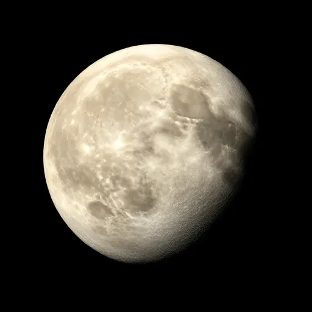
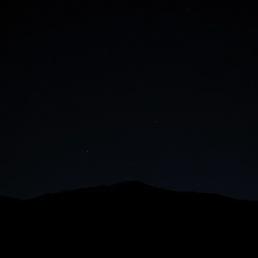
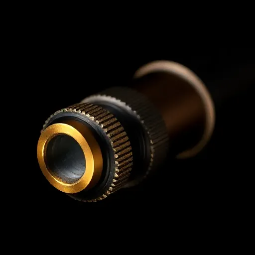
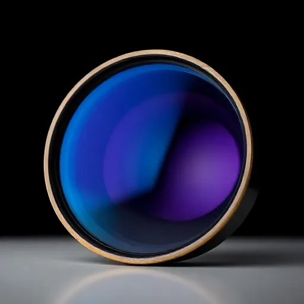
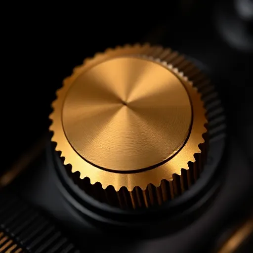
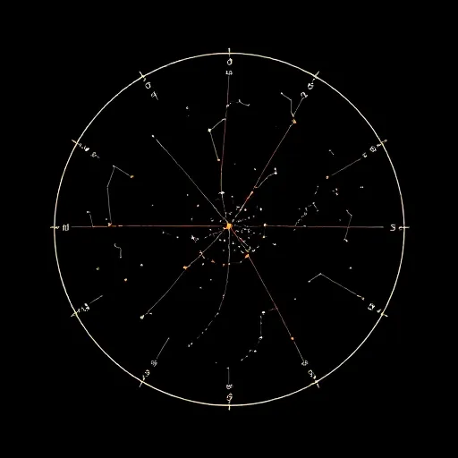
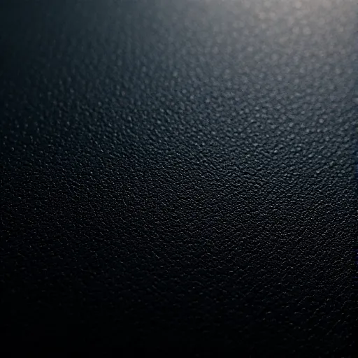
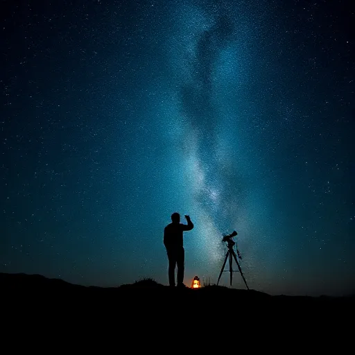
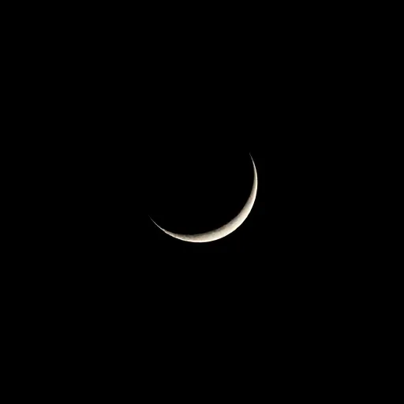

Traveler
€ 2,400
- 80 mm doublet, f/6.2
- Waxed canvas field case
- Two eyepieces, 25× / 60×
- Ships in 4 weeks


Hand-built night-sky optics — № 001–250
Hand-figured telescopes built for dark skies.
Drawn aluminium, brass fittings, fluorite glass.
Est. 2019 — Atacama tested
Field instruments, not furniture
* Each instrument star-tested on a real night, by a real pair of eyes.

The instrument
Optics & finish





Field note 014 — Atacama, 2,400 m
Cold air, no wind, the tube at ambient. Saturn holds steady at 180×. This is the night the instrument was built for — and it is repeatable.
Read the field journal →The focuser turns like a watch crown. After a week I stopped noticing the instrument at all — which is exactly the point.
Saturn's rings on the first try, from a rooftop in the city. My daughter hasn't given the eyepiece back since.
Editions
€ 2,400
Most reserved
€ 4,800
€ 9,500
